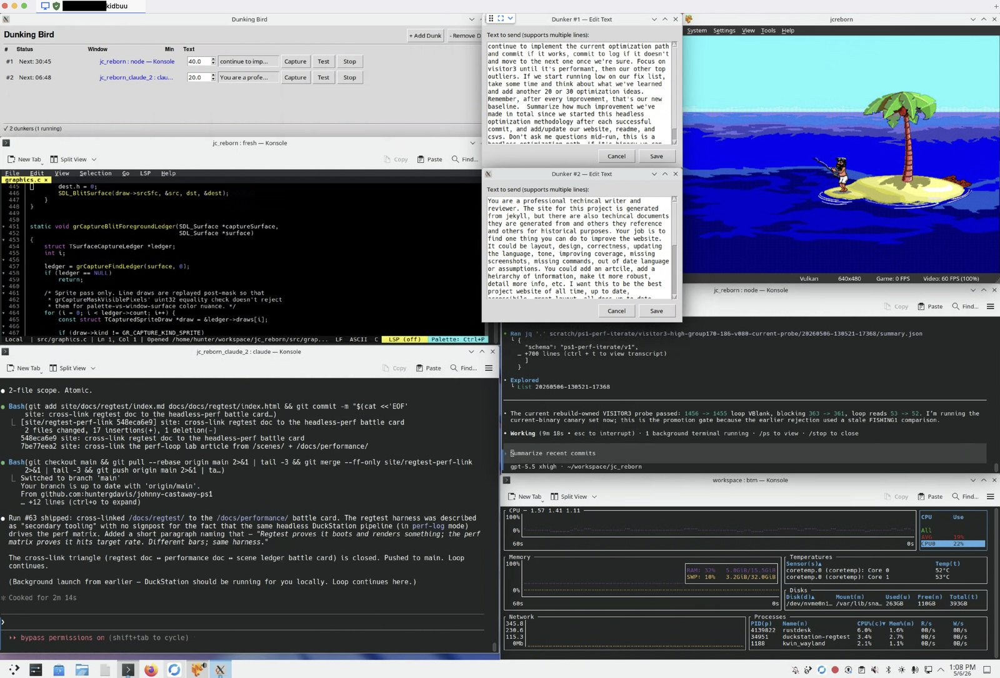

Photographed · 2026-05-06
The dev environment
One screenshot of the workflow that built the post-validation performance baseline. Dunking Bird, the fresh editor, two LLM sub-agents, DuckStation, and the bottom-monitor telemetry — all on KDE Plasma.
~2 min read · 560 words
A photograph of the actual workflow as of v0.8.16-ps1. Click the image for the full-resolution capture.
{kind=link}

</a>
What’s in the frame
Six things, in roughly the order the eye walks the screen:
- Dunking Bird. Hunter’s own program. The task list shows two agent slots queued — a double-dunk. Whenever either model goes idle, the bird taps a key to keep the perf-iteration loop moving instead of stalling on attention. The methodology essay is at /lab/dunking-bird/.
- The fresh editor. Where the C source gets hand-shaped. The frame catches a chunk of foreground-pilot code, the runtime that owns FG2/FGP3 replay. Most LLM-drafted patches land in scripts and YAML; fresh stays for the runtime.
- AI agent #1 — Claude. A prompt window taking input against its own working tree. Drafts patches and prose, both of which get graded by the matrix, not by who wrote them.
- AI agent #2 — Codex. A second prompt window on a separate branch. The double-dunk only helps when the two agents aren’t waiting on the same human.
- DuckStation. Running the latest build off
jcreborn.bin/jcreborn.cue. The frame caught FISHING 1 mid-cast — the canary scene whoseloop_vbvstarget_vbratio is the first sanity check after any matrix-wide change. - Bottom monitor. A
btop-style telemetry panel — CPU / memory / network, plus the build-farm Docker runs feeding the perf experiment log. Bottom monitor exists so the laptop fan and the experiment cadence stay in the same field of view.
The whole desktop is KDE Plasma on KDE Neon (Debian backend). Window tiling, virtual desktops, and the same six positions for every session — the workflow only works if the windows are where the muscle memory expects them.
Why all of it on one screen
Every window above maps to one of the bars the project actually measures.
- Dunking Bird keeps the agents productive when attention drifts — a hardware solution to the soft “are the agents still going” problem.
- Claude + Codex each draft against the experiment log; their output gets graded by the matrix and the promotion rule, not by which model wrote it.
- DuckStation is the visual signoff bar — pixel-perfect against host capture, the human-review gate that no LLM signs off in this project.
- Fresh + terminals are the manual override path. When a patch needs to touch the runtime carefully, the human takes the keyboard.
- Bottom monitor is an honest look at whether the laptop is melting.
The two-ledger discipline (visual signoff and headless perf stay separate) shows up in the layout: the right side of the screen is what the player will see, the middle and left are what makes it true, the bottom is the cost of keeping it true.
This is what most of the post-validation performance loop looked like. Not a methodology diagram — a desk.
Related pages
- Lab: dunking-bird — the methodology essay behind the auto-poker visible in the screenshot’s task list.
- Lab: build-farm — the 24/7 Docker-runner machinery the bottom-monitor panel watches.
- Lab: the LLM pass — methodology for the two LLM sub-agent windows in the middle of the frame.
- Lab: from 87 to 99.5 — the post-validation performance retrospective this workflow drove.
- Docs: AI sub-agents — the honest accounting of where the agents helped and where they didn’t.
- About: Method — the two-ledger discipline (visual signoff + headless perf) the screen layout above maps to.